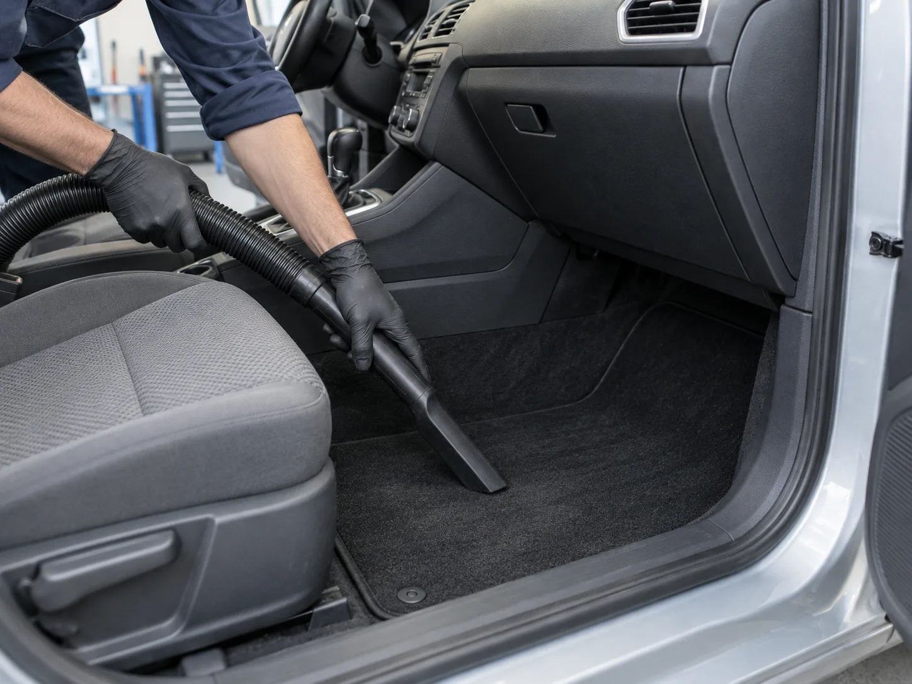
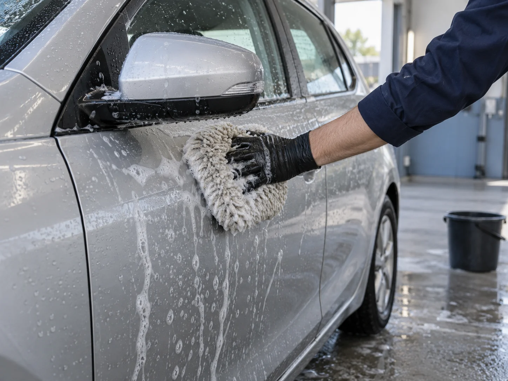
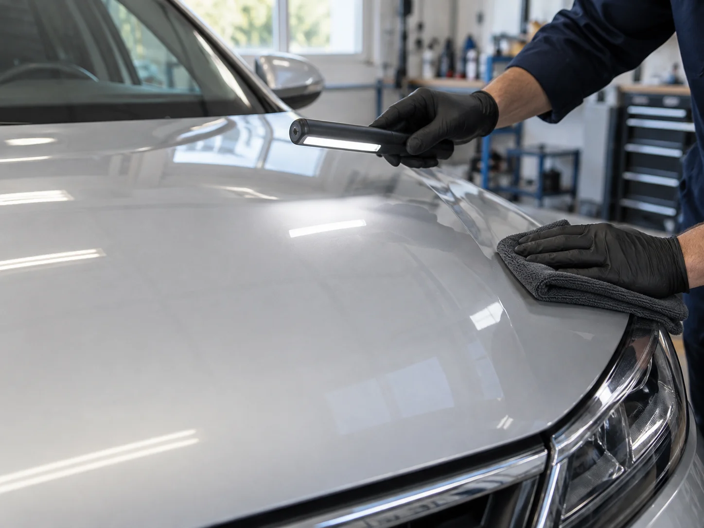

Packages / One vehicle at a time
The right amount
of work for your car.
Compare what each visit covers before choosing a starting point. Vehicle size and condition both matter; inspection comes before a final quote.

Interior
Cabin Reset
A practical clean of the accessible cabin: the dust in the footwell, crumbs around the seats and the marks on everyday touchpoints. Bring the car with personal belongings removed so we can agree what is accessible.
Included
- Vacuum accessible seats, floor and empty boot
- Wipe accessible interior hard surfaces
- Clean interior glass
- Clean removable floor mats
Outside this package
- Seat removal or wet upholstery extraction
- Headlining treatment or child-seat removal/reinstallation
- Mould or biohazard cleanup
- Guaranteed stain or odour removal
Heavy pet hair or embedded spills need a separate inspection. We do not automatically add a surcharge or promise a result.
Optional empty-boot deep vacuum: A$25 and 30 minutes in addition to Cabin Reset. A focused pass beyond the routine vacuum; the boot must be empty. Not offered with exterior packages.

Exterior
Wash & Protect
A hand wash and dry for an everyday gloss-painted car, followed by spray sealant on suitable painted panels. We check the finish before choosing products or starting work.
Included
- Exterior hand wash
- Accessible wheel faces
- Drying and exterior glass
- Spray sealant on compatible painted panels
Outside this package
- Interior, underside, engine bay or ute tray
- Machine polishing or scratch removal
- Matte paint or vinyl-wrap treatment
- Coating-life or finish guarantee
Matte finishes, vinyl wrap or known damage need inspection first. The online worksheet does not confirm product compatibility.

Exterior enhancement
Surface Refresh
A more involved exterior visit with preparation, inspection and a small test area before one-stage machine enhancement on compatible gloss paint. The agreed aim is a considered refresh, not the removal of every mark.
Included
- Exterior wash and appropriate preparation
- Paint inspection and a small test area
- One-stage machine enhancement on compatible gloss paint
- Hand finish and spray sealant application
Outside this package
- Interior cleaning or multi-stage correction
- Respray, touch-up or deep-scratch repair
- Paint protection film installation
- All-defect removal or coating-life guarantee
The physical inspection and test area decide whether the work is suitable. Matte finishes, vinyl wrap and known damage are inspection-only here.
Vehicle bands / workload guide
Compare with the
whole picture in view.
Amounts are illustrative AUD, inclusive of GST. Hours are preparation allowances, not an available appointment slot.
| Vehicle band | Cabin Reset | Wash & Protect | Surface Refresh |
|---|---|---|---|
| Small | A$145.002 hours | A$110.001.5 hours | A$325.004 hours |
| Medium | A$175.002.5 hours | A$135.002 hours | A$395.005 hours |
| Large | A$215.003 hours | A$165.002.5 hours | A$475.006 hours |
Small
Hatchback or compact sedan; up to five seats.
Medium
Larger sedan or five-seat crossover.
Large
Seven-seat SUV or dual-cab ute; tray excluded.
Outside the standard range: vans, camper conversions and heavy commercial vehicles. No automatic price is calculated for these vehicles. We also do not provide mobile detailing, mechanical repair, insurance work or a coating lifespan guarantee.
Download the complete package guide (TXT) ↗